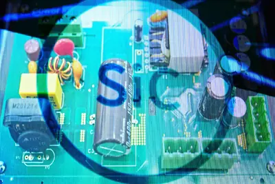
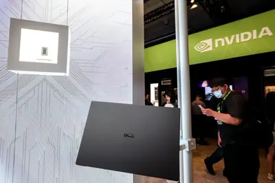
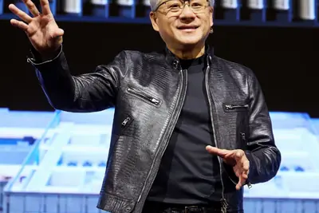
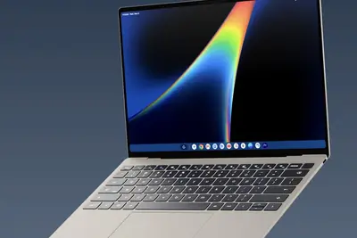
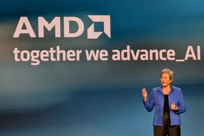
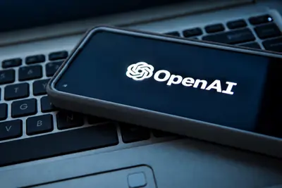
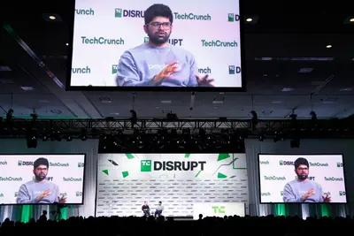
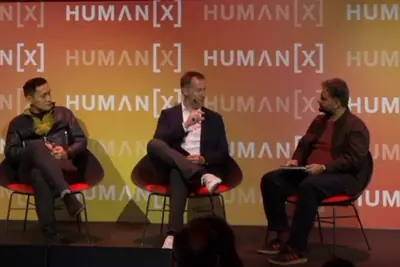
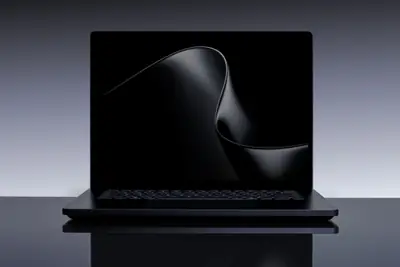

全部主題
IT之家 10 月 12 日消息，据彭博社报道，在巴黎车展前夕，小鹏汽车通用智能中心负责人刘先明接受采访时透露，该公司成功在约两周时间内，将智驾系统从一个欧洲国家微调适配到另一个欧洲国家。 刘先明指出，这一适配过程所需的数据量，仅为训练底层人工智能基础模型所需数据的万分之一。 我们只需利用非常少量的本地数据，就能完成模型在当地的对齐（即适配当地的道路环境）。 据刘先明介绍，小鹏目前正与欧洲监管机构紧密沟通，并维持在 2027 年于欧洲正式落地智能导航辅助驾驶系统（NGP）的原定规划。 刘先明强调， 小鹏汽车致力于将全功能版智驾系统带入欧洲 ，而非妥协推出
AI推升高功率、大電壓需求，功率元件朝高效率、高功率密度與高度整合發展。業界表示，前端和機櫃電源轉換將增加碳化矽（SiC）、氮化鎵（GaN）功率元件，靠近AI晶片核...

超微（AMD）執行長蘇姿丰10月7日訪問南韓，與政府高層及人工智慧（AI）生態系業者密集交流，重申2026年內於南韓設立亞洲首座AI卓越中心（AI CoE），並推進結合超...
NVIDIA 2026年發表新一代PC平台RTX Spark，搭載OLED的7款AI NB，全數採用南韓面板，儘管京東方、TCL華星等中國業者接連投資8.6代IT用OLED產線，南韓業者...

2027年美國四大CSP資本支出可望持續擴增，法國、沙烏地阿拉伯等國家積極建置主權AI，使AI硬體需求成長趨勢不變。而搭載效能更強大的Vera Rubin晶片的新一代AI伺服...

開放權重AI模型的效能競爭升溫，法國AI新創Mistral推出Mistral Large 4（ML4），預計2026年10月底公開。Mistral方面強調，ML4效能足以與部分中國開放權重模型匹敵。
中國本土AI晶片業者壁仞科技新一代GPU產品BR20X已進入投片驗證階段，並同步展開客戶部署與量產準備。
新加坡淡馬錫國際投資長Rohit Sipahimalani認為，2027年人工智慧（AI）及通膨，將是市場面臨的最大風險。
IT之家 10 月 12 日消息，据路透社今日报道，月之暗面高管正在与股东谈判，希望在 IPO 前解决一起法律纠纷。该股东指控这些高管存在不当行为，并要求获得赔偿。 根据路透社看到的一封 Recurrent.ai 律师于 3 月 11 日致月之暗面投资者的信函，AI 软件开发商 Recurrent.ai 及其部分投资者指控月之暗面 CEO 杨植麟、首席技术官张宇韬向 Recurrent 投资者作出虚假陈述，以牺牲 Recurrent 利益为代价中饱私囊。 信函中称，包含关键大语言模型数据的服务器在未经授权的情况下从 Recurrent 转移至月之暗面的一
IT之家 10 月 11 日消息，彭博社记者马克 · 古尔曼今日在新一期《Power On》通讯中透露，苹果首款智能家庭中枢名为“HomeView”，预计将在 10 月 13 日的“欢迎回家”活动正式发布，11 月出货。 据介绍，这款产品的外观设计类似 iMac G4“台灯电脑”，采用悬浮式屏幕，下方配有扬声器底座。 该设备将搭载 A18 芯片 ，官方还将推出壁挂安装版本。 IT之家从原报道获悉， 这款新产品将提供深空灰、银色、星光色和粉色四种配色 ，壁挂版仅有深空灰、银色两种配色。 古尔曼表示，这款产品主要使用语音交互， 以 AI Siri 为核心 。
IT之家 10 月 12 日消息，开发者 Skylar Taylor-Barrick 开源了一套名为 gbos-vm 的项目，可在搭载 Apple Silicon 芯片的苹果 Mac 上，通过虚拟机运行谷歌 Googlebook OS。 该项目已在 GitHub 上公开，使用 QEMU 加载谷歌为戴尔 Googlebook 提供的官方恢复镜像，并对系统进行修改，使其适配虚拟硬件。开发者强调，该项目并非通用 Android 镜像，也不是将 Googlebook OS 原生安装到 Mac 上，且与谷歌、戴尔均无官方关联。 Googlebook 是谷歌新推出的

市場對美元長期地位的討論，正因人工智慧投資熱潮而出現新變化。分析指出，過去美元霸權主要建立在石油貿易與美國金融 […]
IT之家 10 月 12 日消息，据《卫报》报道，英国将加强其网络防御，同时呼吁顶尖人工智能研发企业在系统安全治理上采取更积极的举措。 英国 AI 国务大臣卡尼什卡 · 纳拉扬（Kanishka Narayan）预计将在西伦敦发表的专题演讲中正式宣布上述政策主张。 纳拉扬将呼吁前沿人工智能研发企业采取更多切实举措保障系统安全。IT之家获悉，纳拉扬表示， 英国绝不能完全依赖科技巨头对其模型进行“自我监管” ，并强调英国本土必须构建更多自主可控的 AI 基础设施。 延伸阅读 据英国政府官网资料，卡尼什卡 · 纳拉扬于 2026 年 7 月 20 日被任命为人
麥肯錫全球研究院最新報告指出，人工智慧與自動化雖然可能在未來十年為美國帶來更多新職缺，但真正的難題不在於工作消 […]
IT之家 10 月 12 日消息，据华尔街日报消息，据知情人士透露，亚马逊正就收购人工智能初创公司 Decart 展开谈判， 该笔交易的潜在估值约为 70 亿美元 （IT之家注：现汇率约合 469.48 亿元人民币） 。 总部位于旧金山的 Decart 专注于研发跨芯片适配软件，能够帮助开发者在不同 AI 芯片之间无缝切换。随着各大科技巨头纷纷竞逐算力资源，这一底层软件能力正变得愈发关键。 知情人士指出，若谈判进展顺利且未出现新的竞购方，该交易或将很快达成。 研究机构 PitchBook 的数据显示，Decart 此前已从红杉资本、Benchmark 以
晶片大廠超微（AMD）執行長蘇姿丰（Lisa Su）造訪韓國，目的在為其 AI 加速器確保高頻寬記憶體（HBM […]

當餐飲業開始導入 AI，最早受到關注的往往是消費者看得見的功能，例如語音點餐、聊天機器人或行銷工具。但近期達美樂（Domino’s）與麥當勞的動作，顯示餐飲科技正在往更深的營運層移動：AI 不再只是附加功能，而是逐步嵌入點餐、備餐、庫存、設備與外送等流程，成為串聯餐廳日常運作的核心系統。 達美樂以自研 DomOS 升級追蹤器，用精準預測解除顧客「等待焦慮」 達美樂近期大幅升級了自 2008 年問世的經典服務 Pizza Tracker。這項功能最初讓顧客透過簡單的視覺化介面，即時掌握披薩從下單、製作到送達的狀態，至今已累計追蹤超過 25 億筆訂單。而最新
【科技早餐】今天精選 8 則國內外重要科技新聞。 ＊OpenAI 年化營收近 500 億美元，與先前數字差距涉及計算口徑 《路透社》引述知情人士報導，OpenAI 向投資人表示，9 月年化營收接近 500 億美元，低於先前在另一場投資人活動透露的接近 700 億美元。消息人士指出，差距主要涉及嘗試將 OpenAI 的數字與 Anthropic 直接比較時，採用了不同計算口徑。報導指出，Anthropic 納入透過亞馬遜（Amazon）AWS、Google Cloud 等雲端合作夥伴取得的銷售收入，OpenAI 則未採用相同方式。OpenAI 未回應《路透

Over the past couple of years, we’ve seen multiple reports that Apple was working on a new smart home product, but now it seems the product has a name and a launch date.
Article URL: https://twitter.com/karpathy/status/2109361546505966046 Comments URL: https://news.ycombinator.com/item?id=50047422 Points: 181 # Comments: 268
Less than 48 hours, TechCrunch Disrupt 2026 starts in San Francisco’s Moscone West. Save up to $100 on your pass before prices increase at the door, plus get 50% on a second pass. Or score other deals.

When President Donald Trump announced his plans to rebrand artificial intelligence as "super intelligence," you'd be forgiven for being skeptical that it would catch on. While most of the broader population is sticking with AI, some of Silicon Valley's most powerful are falling i
On Equity, we debate the impact of data center moratoriums and whether the AI industry has a communication problem.
Voice AI's often misses important points for its context layer, and causes the whole pipeline to break

IT之家 10 月 11 日消息，奇瑞捷途全新旅行者 7 将于 10 月 14 日上市，官方预告智能科技再升级。 新车搭载 TOUROS 3.3 AI 智能座舱、骁龙 8255 高阶座舱芯片，搭配 24GB 运存 +256GB 超大存储，内置讯飞星火智能 AI 大模型，配备 15.6 英寸 2.5K 中控巨幕。 IT之家注意到，该车已于 9 月 23 日开启预售，共提供 7 款车型，预售价 14.99-17.99 万元。动力方面，该车提供 1.5T 汽油、2.0T 汽油以及 1.5T 插混三种动力。新车的长宽高分别为 4827mm、2006mm 和 18
A long day’s haul in the video game slop mines.
I'm embarking on a journey I've so far been hesitant to go on: actually using AI on the regular. Giving my most personal data to cloud services has been a major hold up for me, but it's increasingly possible to run powerful models locally to see what they're capable of. Is this t
IT之家 10 月 11 日消息，微软美国官网显示，Surface Laptop Ultra 笔记本 128GB 统一内存、1TB SSD 配置已经缺货，该产品定价 5,899.99 美元 （IT之家注：现汇率约合 39,570 元人民币） ，其他较低配置机型仍可购买。 结合科技媒体 Wccftech 报道，这款笔记本迅速售罄的原因可能与早期供应有限有关，但由于微软没有公布详细数据，我们无法验证这种说法的真实性。另一方面， 这款笔记本能够支持 CUDA 生态 ，因此只要仔细考虑这类笔记本面向的客户群体，就不难理解其快速售罄的缘由。 对 AI 开发者和创作

Meta 的 Muse、Instinct、ChatGPT 的 Dots 等個人 AI 代理人（AI Agent […]
外界原本擔心人工智慧（AI）將大幅壓縮科技業就業機會，但最新徵才數據顯示，情況並未如預期惡化。根據追蹤逾 9, […]